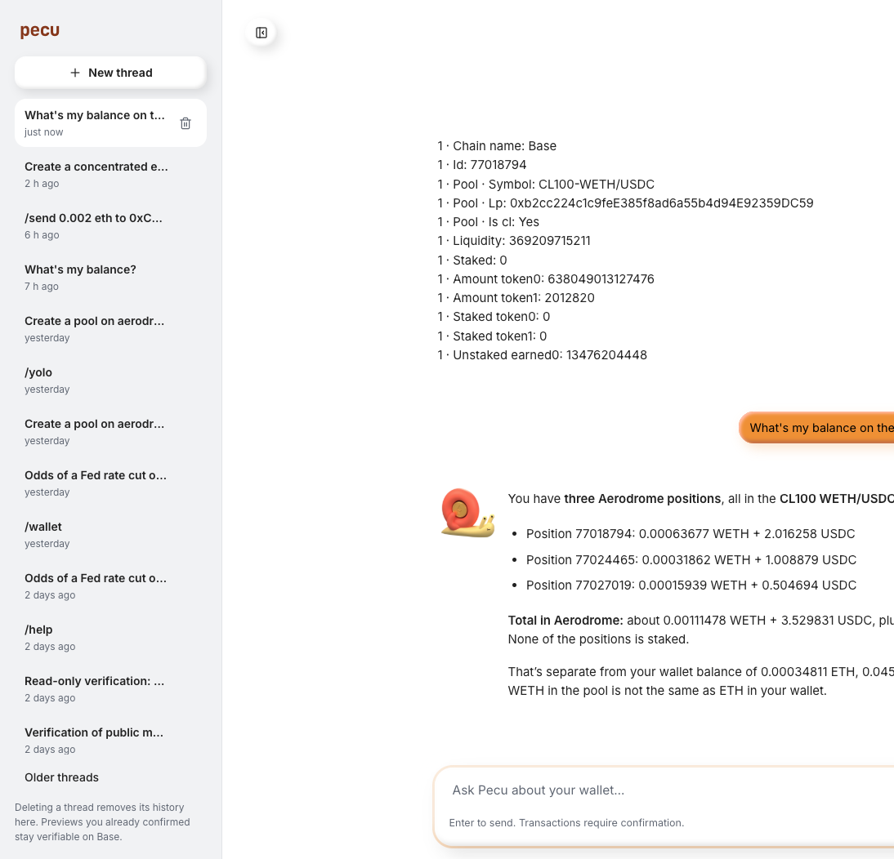
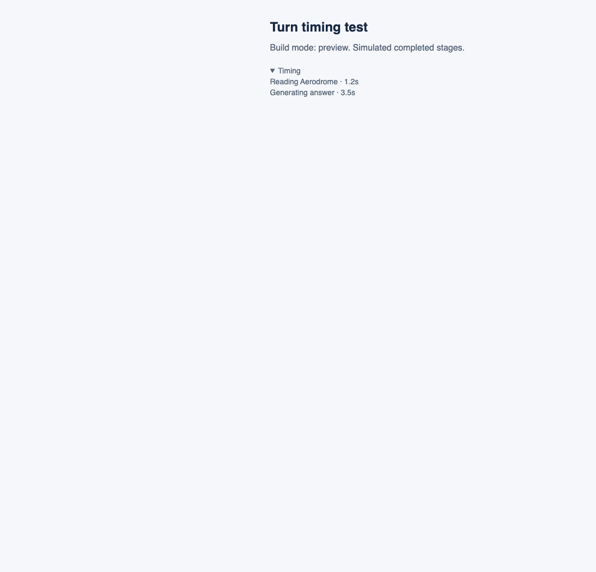

Pecu: missing positions fixed
The original question now returns all three unstaked WETH/USDC positions. Production hides the timing panel; development, preview and test builds retain it. Verified on 26 September 2026. No transactions were sent.
Original thread · PR #47 · Validation
Why positions were missing
Pecu imported its own pinned Aero SDK, independent of the workspace SDK. Its old commit af14646 read basic and staked liquidity but omitted unstaked concentrated-liquidity NFTs. Updating to the already published 0930a1b enables account-based NFT enumeration without hardcoded tokens, pools or position IDs.
A second defect appeared after deployment: the generic chat formatter stopped after 12 fields, leaving only part of the first position. Model read tools now receive complete JSON. The command formatter lists every position with token amounts converted using the SDK's returned metadata.
Live verification
An independent Base RPC enumerated the wallet's NFTs and checked each owner and nonzero liquidity. Repeating the exact original question and running /aero positions both returned the same three IDs in pool 0xb2cc224c1c9feE385f8ad6a55b4d94E92359DC59.
| Position | Unstaked WETH | Unstaked USDC |
|---|
| 77018794 | 0.000636794258592647 | 2.016186 |
| 77024465 | 0.000318634165627857 | 1.008843 |
| 77027019 | 0.000159397308265853 | 0.504675 |
Amounts are the 20:27 UTC snapshot and move with the pool price. All three were unstaked. Independent ownership check · Natural-language answer
PostHog confirms successful positionsUnstakedConcentrated reads and retained production tracing. The natural-language turn took 22.717 seconds; the direct command took 10.259 seconds in the backend and 10.949 seconds at the browser API. These are individual correctness checks, not a performance benchmark. Full pool enumeration still accounts for about 6 seconds of each read.
Verified production trace · Span evidence

Live production answer. The browser screenshot is cropped at the right edge; all three position IDs are visible.
Debugging visibility
The shared TurnProgress component renders only in Vite modes development, preview and test. Production and unknown modes render nothing. bun run build:preview retains the panel. Cloudflare/PostHog telemetry and streaming remain enabled. The gate covers both Agent and Stocks chat.

Local preview component fixture. The five-mode rendering tests cover production, unknown, development, preview and test.
Release evidence
528 Pecu tests and 94 web tests passed. Type checks, lint, Worker bundles, web/docs builds and a two-commit secret scan passed. Regression tests failed against the old SDK and truncated output before passing with the fixes.
The Aero service, main agent, Stocks web app and documentation Worker were deployed to Francesco's personal Cloudflare account. Read-back deployment versions. The SDK fix was already published; no standalone SDK source changed.
Shared command and model paths cover Pecu web and X Chat, and both model providers. The live check used web; X Chat and Workerd behavior have regression coverage. BeeGreat native clients do not import this Pecu web component and required no UI changes.
Source: f901580ec70c0d259e8feb9861a441fb222c06a0, branch fix/pecu-positions-production-timings. Automatic approval review rejected a direct push to main, so the code is published in draft PR #47. Main was not changed.
The recording includes the live retry. The browser host disconnected during the final resize, after the successful answer and command checks; the recording was recovered.